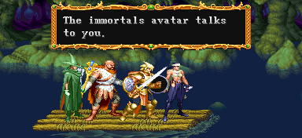
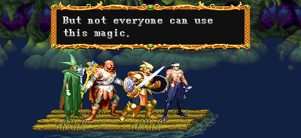
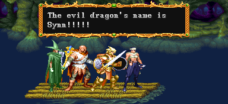

| STAGE 3-B Battle on the Vesuvia |
| 베수비아강의 전투 |
| (일어판 - 激流 ベスビア川を下れ! : 격류 베수비아강을 내려가다!) |
모든 적을 다 지나치고 갈 수도 있고 거의 전부 만나고 갈 수도 있기 때문에
어떻게 보면 짧다고 할 수도 있고 어떻게 보면 가장 길다고 할 수도 있다.
곳곳에 돈과 적이 많기 때문에 점수 쟁탈전을 할 때 오면 딱 좋은 스테이지라 할 수 있다.
스테이지 특성
다른 스테이지와 달리 땟목을 타고 강의 흐름을 따라 오른쪽으로 이동하기 때문에 스테이지 왼쪽으로 되돌아 갈 수 없다. 곳곳에 작은 바위턱이나 나뭇조각 위에 적들이 타고 있는데 이들과 마주치면 전투가 벌어진다.
적과 마주친다면 위와 같은 문자가 나온 후
크게 확대된 땟목에서 싸움이 시작된다.
적들은 배경에서 튀어나오거나 좌/우/아래서 튀어 나온다.
적들을 다 물리치면 다시 원래 화면으로 돌아가서 이동한다.
그리고 스테이지 위 아래 지역에 군데군데 100sp/500sp가 놓여 있어서 이것에 닿으면 돈을 획득하며 플레이어 수 대로 나눠 받는다. 만약 3인일 경우 원래 액수의 1/3씩 받는데 나머지는 증발한다. 예를 들면 100sp를 얻었다면 33sp씩만 받고 1sp는 증발한다.
시간제한
스테이지가 시작되자 마자 30초의 시간이 주어지며 이 제한시간이 지나가면 블랙 드래곤이 나와서 공격을 한다. 특히 브레쓰를 내뿜으면 피할 수가 없어서 대책이 없다. 대신 전반부/후반부 중간에 깃발(체크 포인트)이 있는데 그곳을 통과하면 다시 30초의 시간이 주어진다.통과 할 때 남은 시간 x 100의 xp보너스가 주어진다.
ps. 가끔 초반에 이 시간제한이 안나오는 경우가 있다. 아직 특별한 조건은 밝혀지지 않았다.
그 상태에서 적을 만나거나 아니면 동굴로 진입하기 전 까지는 시간이 나오지 않는다.
(시간제한이 지났을 경우)
"저길 봐! 블랙 드래곤이다!!"
(일어판)
"あっ! ブラックドラゴンだ。"
"앗! 블랙드래곤이다."
"여기선 저 블랙 드래곤을 물리칠 방법이 없어.
재빨리 후퇴하자. 블랙 드래곤과는 나중에 싸울 수 있어!"
(일어판)
"今の狀態じゃ勝目かない。攻擊するより、早く舟を進ませるんだ!"
"지금 상태로는 승산이 없다. 공격을 하는 것 보다 서둘러 뗏목을 전진시키자!"
뒤쪽에 있으면 할퀴기도 하고 앞쪽에 있으면 브레쓰를 내뿜는다.
브레쓰든 할퀴기든 연속으로 맞을 수 밖에 없으니 금방 게임오버 되기 일쑤다 (특히 브레쓰).
연속해서 적들을 만날 것이 아니라면 한시라도 빨리 체크 포인트를 통과하는게 좋다.
위 스샷에서 볼 수 있는 깃발을 지나치면 블랙 드래곤은 물러간다.
물론 그 후로 다시 제한 시간이 끝난다면 블랙 드래곤은 다시 나온다.
땟목 조작
방향키를 앞쪽으로 하면 가속이 되며 뒤쪽으로 하면 감속이 된다.위/아래로 위치 조절을 할 수 있다.
방향키 조작이 일치되는 플레이어가 많을 수록 가속/감속의 정도도 더욱 커진다.
모든 플레이어의 방향키 조작이 인식되니 방향 조절은 한명이 맡아서 하는게 좋다.
나머지 플레이어는 가속/감속만 도와주도록 한다.
알아도 그만 몰라도 그만인 내용

아시아 버전의 - TIME ATTACK - 글자의 색은 이렇다.
일본 버전의 경우 붉은색으로 나온다.
전반부 |
전반부의 전체 지도.
바위턱에 올라 서 있는 적들은 위치가 고정 되 있지만 나무조각을 타고 있는 적들은 화살표 방향대로 위/아래 혹은 앞/뒤로 움직인다. 마주치고 싶지 않다면 주의해야 한다.
갈림길이 나온다면 위 스샷과 같이 화살표가 나온다.
싸움이 시작되면 이와 같은 배치로 시작된다.
어떤 적이든지 40초가량이 지나가면 도망간다.
코볼드 1
| 1인 | 왼쪽에서 코볼드 x2 + 오른쪽에서 코볼드 x2 → 전부 제거하면 아래쪽에서 코볼드 x2 + 배경에서 코볼드 x2 |
| 2인 | 1인 플레이와 똑같다. |
| 3인 | 왼쪽에서 코볼드 x2 + 오른쪽에서 코볼드 x2 → 전부 제거하면 아래쪽에서 코볼드 x2 + 배경에서 코볼드 x2 → 전부 제거하면 아래쪽에서 코볼드 x2 + 배경에서 코볼드 x2 |
| 4인 | 3인 플레이와 똑같다. |
코볼드 2 (지도상에서 별이 달려있는 녀석들 - 물론 실제로 달려있는건 아니다.)
| 1인 | 배경에서 코볼드 x4 → 둘 이상 물리치면 왼쪽에서 오일던지는 코볼드 x3 + 오른쪽에서 오일던지는 코볼드 x3 |
| 2인 | 1인 플레이와 똑같다. |
| 3인 | 배경에서 코볼드 x4 → 둘 이상 제거하면 아래쪽에서 코볼드 x4 둘 이상 물리치면 왼쪽에서 오일던지는 코볼드 x3 + 오른쪽에서 오일던지는 코볼드 x3 |
| 4인 | 3인 플레이와 똑같다. |
트로글로다이트
| 1인 | 배경에서 트로글로다이트 x2 → 전부 제거하면 아래쪽에서 트로글로다이트 x3 |
| 2인 | 1인 플레이와 똑같다. |
| 3인 | 배경에서 트로글로다이트 x2 → 배경에서 트로글로다이트 x2 → 전부 제거하면 아래쪽에서 트로글로다이트 x3 |
| 4인 | 3인 플레이와 똑같다. |
액스 놀
| 1인 | 오른쪽에서 액스 놀 x2 → 전부 제거하면 공중에서 액스 놀 x3 |
| 2인 | 1인 플레이와 똑같다. |
| 3인 | 오른쪽에서 액스 놀 x2 → 전부 제거하면 공중에서 액스 놀 x3 → 전부 제거하면 오른쪽에서 보우 놀 x3 |
| 4인 | 오른쪽에서 액스 놀 x2 → 전부 제거하면 공중에서 액스 놀 x3 → 전부 제거하면 오른쪽에서 보우 놀 x3 → 왼쪽에서 보우 놀 x3 |
보우 놀
| 1인 | 오른쪽에서 보우 놀 x3 → 왼쪽에서 보우 놀 x3 → 오른쪽에서 아울베어 x2 |
| 2인 | 오른쪽에서 보우 놀 x3 → 왼쪽에서 보우 놀 x3 → 오른쪽에서 아울베어 x2 + 왼쪽에서 보우 놀 x3 |
| 3인 | 오른쪽에서 보우 놀 x3 → 왼쪽에서 보우 놀 x3 → 오른쪽에서 아울베어 x2 + 왼쪽에서 아울베어 x1 → 한마리를 제거하면 왼쪽에서 보우 놀 x3 → 아울베어를 전부 제거하면 오른쪽에서 보우 놀 x3 |
| 4인 | 오른쪽에서 보우 놀 x3 → 왼쪽에서 보우 놀 x3 → 오른쪽에서 아울베어 x2 + 왼쪽에서 아울베어 x1 → 한마리를 제거하면 왼쪽에서 보우 놀 x3 → 아울베어를 전부 제거하면 왼쪽에서 보우 놀 x3 → 오른쪽에서 보우 놀 x3 |
동굴 |
♪ BGM재생 ♪
귀를 기울여 들어보니, 어딘가에서 들려오는 목소리를 들을 수 있다.
(일어판)
耳をすますと、どこからか聲か聞こえてくる。
귀를 기울이자, 어디선가 목소리가 들려온다.

불멸의 화신이 당신에게 말을 한다.
(일어판)
君に、精靈か語りかけてきた。
당신에게 정령이 말을 걸어 왔다.
"너희들은 모두 훌륭하구나. 너희들에게 모든 것을 맡겨보는게 좋겠어."
(일어판)
"惡に立ち向かう正義の者よ。あなたにすべてを託します。"
"악에게 맞서는 정의의 사도여, 당신에게 모든것을 맡깁니다."
"나의 지식으로 너희에게 도움을 주마."
(일어판)
"私か少しでも、あなたの戰いに力になれるよう、1つだけ何かを語りましょう。"
"제가 조금이라도, 당신의 싸움에 힘이 될 수 있도록, 단 한 가지 뭔가를 말해드리겠습니다."
"어떤 것을 알고 싶은가?"
A. 전설적인 칼에 대해서.
B. 궁극의 마법에 대해서.
C. 적에 대해서.
D. 괜찮습니다.
(일어판)
"さて君は何を聞く?"
"자 그럼 당신은 무엇을 묻겠습니까?"
1. 傳說の劍について。
1. 전설의 검에 대해.
2. 究極魔法について。
2. 궁극마법에 대해.
3. 敵について。
3. 적에 대해.
4. 何も聞かない。
4. 아무것도 묻지 않는다.
▶ 스테이지 선택에 대한 이야기
기본적으로 많은 수가 선택한 쪽으로 선택이 된다.
그러나 같은 수가 서로 다른 선택지를 선택했다면 B > C > D > A 의 순서로 선택이 된다.
예를 들면 2명이 C를 선택하고 두명이 B를 선택했다면 B가 선택된다.
그런데 2명은 C를 선택하고 두명이 D를 선택했다면 C가 선택된다.
A를 선택했을 경우
"하나는 한번 휘두름으로써 대부분의 적에게 불타오르는 파괴를 선사 할 수 있다."
(일어판)
"一振りすれば炎を卷き起こし相手を一瞬にして燃えあがらせる劍...。"
"한 번 휘두르면 화염을 일으켜 상대를 일순에 태워버리는 검..."
"하나는 한번 휘두름으로써 대부분의 적에게 얼어붙는 파멸을 선사 할 수 있다."
(일어판)
"一振りすればふぶき、相手を一瞬にして凍らす劍...。"
"한 번 휘두르면 눈보라를 일으켜, 상대를 일순에 얼려버리는 검..."
"하나는 한번 휘두르게 되면 그 어떤 적에게 라도 번개의 멸망을 선사 할 수 있다."
(일어판)
"一振りすれば雷が走り、相手を電擊でしとめる劍...。"
"한 번 휘두르면 번개를 일으켜, 상대를 번개의 힘으로 처치하는 검..."
"이 강력한 세자루의 칼은 어딘가에 숨어 있다고 한다."
(일어판)
"この最强3本劍か、どこかにあるという。"
"이 최강의 3개의 검은 어디엔가 있다고 합니다."
"악의 흑룡을 물리친 전설의 영웅 (현 스코어 1위 플레이어)의 칼은
이 세계 어딘가에 깊숙히 숨어 있다고 한다."
(일어판)
"そしてあの暗黑地龍を倒したと言われる傳說の勇者(이름)の劍が,
"그리고 그 암흑지룡을 물리쳤다고 전해지는 전설의 용자 (현 스코어 1위 플레이어)의 검이,
この地の奧深くに眠っているらしい...。"
이 땅 깊숙한 곳에 잠들어 있다고 합니다..."
ps. 클래스에 상관없이, 그리고 전설의 검을 소유 했었는지에 상관없이
무조건 현 스코어 랭킹 1위인 플레이어의 이름이 나온다.
ps2. 일본판의 기본 1위 이름은 ヤマノウ.
"이것이 사실일지 그저 허구일런지....."
(일어판)
"本當なのか、やはり傳說なのか...。"
"사실일 것인가, 역시 전설인 것인가......"
- 닫기 -
B를 선택했을 경우
"어떠한 적이든지 그 즉시 붕괴시킬 수 있는 힘을 가지고 있는 궁극의 마법이 있다고 한다."
(일어판)
"んな敵でも一擊で倒すという究極の大爆發魔法があるという"
"어떤 적이라도 일격에 쓰러뜨릴 수 있는 궁극의 대폭발 마법이 있다고 합니다."

"그러나 모든 이가 이 마법을 쓸 수 있는 것은 아니다."
(일어판)
"この魔法は何人でも使えるというわけではない。"
"이 마법은 누구나 사용할 수 있는 것은 아닙니다."
"경험이 많은 능력있는 마법사만이 시도 할 수 있다고 한다."
(일어판)
"使いこなすには、かなりの經驗をつんだ魔法使いしか無理だろう。"
"사용하기 위해서는, 상당한 경험을 쌓은 마법사가 아니면 무리겠죠."
"잘못 사용했다면 사용자의 목숨 뿐만이 아니라
함께하는 동료들 마저도 모두 잃을 것 이다."
(일어판)
"ただし、ひとたび間違えば自分の命はあるか,すべての命も奪いさってしまうという。"
"단지, 한 번 실수하면 자신의 목숨이 붙어있을지는, 모든 생명을 앗아간다고도 하네요."
"이 마법은 파이널 스트라이크라고 한다......"
(일어판)
"その魔法の名はファイナルストライク...。"
"그 마법의 이름은 파이널 스트라이크......"
- 닫기 -
C를 선택했을 경우
"2년전 다로킨(Darokin)공화국을 빼앗기 위한 음모를 꾸몄던 아크 리치 데이모스는
더욱 거대한 악의 하수인 이었을 뿐 이었다......"
(일어판)
"2年前...ダロキン共和國を狙った魔王デイモスは、
"2년전...다로킨 공화국을 노린 마왕 데이모스는
偉大なる大君主、巨大で邪惡なドラゴンの手下にすぎなかった...。"
위대한 대군주인 거대하고 사악한 드래곤의 부하에 지나지 않았습니다......"
"그(데이모스)의 주인인 거대하고 악한 드래곤은 마침내 스스로 움직이기 시작했다."
(일어판)
"その巨大で邪惡なドラゴンが本格的に動き出した。"
"그 거대하고 사악한 드래곤이 본격적으로 움직이기 시작했습니다."
"데이모스가 격퇴 당함에 따라 전세계를 그의 어두운 혼란속으로
몰아넣을 음모를 (자신이 직접) 꾸미기 시작했다."
(일어판)
"魔王デイモスが倒された今、今度は全世界を暗黑へつつもうとしている...。"
"마왕 데이모스가 쓰러진 지금, 이번엔 전세계를 암흑으로 덮어버리려고 하고 있습니다."

"그 사악한 드래곤의 이름은 Synn이다!!!!!"
(일어판)
"その邪惡なドラゴンの名はシン!!!!!"
"그 사악한 드래곤의 이름은 신!!!!!"
- 닫기 -
D를 선택했을 경우
후반부 |
후반부의 전체 지도.
기본적인건 전반부와 같지만 적과 싸우게 될 경우 배치가 조금 달라진다.
트로글로다이트 2 (지도상에서 별이 달려있는 녀석들 - 물론 실제로 달려있는건 아니다.)
| 1인 | 배경에서 트로글로다이트 x2 → 전부 제거하면 아래쪽에서 트로글로다이트 x3 → 하나 이상 제거하면 왼쪽에서 오일던지는 코볼드 x3 + 오른쪽에서 오일던지는 코볼드 x3 |
| 2인 | 1인 플레이와 똑같다. |
| 3인 | 배경에서 트로글로다이트 x2 → 배경에서 트로글로다이트 x2 → 전부 제거하면 아래쪽에서 트로글로다이트 x3 → 하나 이상 제거하면 왼쪽에서 오일던지는 코볼드 x3 + 오른쪽에서 오일던지는 코볼드 x3 |
| 4인 | 3인 플레이와 똑같다. |
도착지 |
후반부를 통과하면 또다시 어떤 동굴에 도착하게 된다.
* 팻말에 적혀 있는 내용 *
Keeping Going. Don't turn back.
계속 가라. 돌아오지 마라.
약간 전진하면 자이언트 스콜피온 5마리가 나온다. 시간이 조금 지나거나 앞으로 더 전진하면 이중 2마리만 남고 전부 도망간다. 위쪽에 나오는 녀석을 제거 했을 경우 위에서 몇마리가 더 쏟아지는데 얼마지나지 않아서 금방 도망간다.

위 스샷의 하늘색 선을 넘어가기 전 까지는 한 위치에 4초이상 머물면
머리위로 3개의 바위가 떨어지며 불규칙하게 오른쪽에서 3개의 창이 날아온다.
이 선을 넘어가면 화면이 어두워지면서 흔들거리기 시작한다.
상자 A
| 랜덤 아이템 | 고정 아이템 | 클래스별 아이템 | |||||||
|
|||||||||
| 드워프가 격파시 | |||||||||
상자 B
| 랜덤 아이템 | 고정 아이템 | 클래스별 아이템 | |||||||
|
|||||||||
| 드워프가 격파시 | |||||||||
상자 C - 낙석/불/석화 트랩이 각각 1/3의 발동로 존재한다.
| 랜덤 아이템 | 고정 아이템 | 클래스별 아이템 | |||||||
(아주 높은 확률로 아무것도 안나옴) |
|
||||||||
| 드워프가 격파시 | |||||||||
어느정도 진행하면 지진이 일어나면서 낙석이 일어나고 자이언트 스콜피온 12마리가 우수수 떨어진다. 낙석을 맞으면 데미지를 입는데 자이언트 스콜피온의 그림자도 섞여있기 때문에 피하기가 약간 애매하다. 가만히 있어도 맞지 않는 경우도 있지만 맞는 경우도 있다.
확실하게 피하려면 파이터나 드워프는 A+B, 시프는 백스텝, 클레릭/매직 유저/엘프는 주문을 시전해서 피하도록 한다.
상자 D가 화면의 중앙 정도 오도록 이동하면 보스인 맨 스콜피온이 등장한다.
상자 D - 잠겨있으며 낙석/트랩 없음이 각각 1/2의 확률로 발동한다.
| 랜덤 아이템 | 고정 아이템 | 클래스별 아이템 | |||||||
(높은 확률로 아무것도 안나옴) |
|
||||||||
| 드워프가 격파시 | |||||||||
|
벽을 부수고 맨 스콜피온이 등장한다.
1인 플레이시 붉은색 맨 스콜피온만 나오지만 2인 이상 플레이시 녹색까지 나온다.
다른 보스에 비해서 아주 잘 쓰러지고 또한 쓰러지기 시작하면 그 어떤 공격도 연결이 안된다.
그렇기 때문에 화려하고 긴 콤보를 넣을 생각은 안하는게 좋다. 차근차근 일반 A공격으로 공격하는게 좋다.
그렇다곤 해도 쓰러진 맨 스콜피온에 붙어서 공격하면 어렵지 않게 제압할 수 있지만 문제는 트로글로다이트와 구울이 나와서 방해를 한다는 것 이다. 딱히 쉽게 해결하는 방법은 없고 파이터나 드워프는 A+B로 적절히 견제를 하고 클레릭은 때에 따라 홀드 퍼슨이나 컨티뉴얼 라이트로 견제를 하도록 한다. 시프는 방법이 없다. 계속 위치를 적절히 바꾸는 수 밖에 없다.
매직 유저나 엘프는 라이트닝 볼트로 좀 더 쉽게 제압 할 수 있다. 자이언트 스콜피온을 포함한 일반 몬스터를 거쳐서 맞추면 상당한 데미지를 입힐 수 있다. 다만 엘프의 경우 맞춘 숫자가 총 9마리를 넘어가면 오히려 데미지가 감소하니 자이언트 스콜피온 숫자를 미리 적절히 조절을 할 필요가 있다.
이 보스가 어려워지는 경우는 2인 이상 플레이 할 때다. 초반에 제압을 못했다면 이들이 던지는 낫으로 인해 상당히 혼란스러워질 수 있다. 매직 유저나 엘프가 있다면 별 문제가 안되고 클레릭이 있다면 컨티뉴얼 라이트로, 파이터나 드워프라면 A+B로, 시프만 있다면 이프리트의 항아리라도 써서 먼저 쓰러뜨리고 붙어서 공격하자. 녹색 맨 스콜피온만 먼저 쓰러뜨린다면 그다음은 그리 어렵지 않다.
▶ 클리어 후 레벨이 올라가는 클래스 : 모든 클래스
상점 |

스테이지 3-B를 클리어하면 최초로 상점을 방문하게 된다.
아이템 구입 가격
| 40sp | 30sp | 20sp | 20sp | 100sp |
| ※ 아이템 교환 | → |
'아울베어의 알'을 가지고 있을 경우 대화를 하면 '원더 에그'로 바꿔준다.
오로지 이 상점에서만 바꿀 수 있다는 점을 명심해야 한다.
좀 더 자세한 정보는 상점 정보를 보기 바란다. ▶ 상점 정보 보기